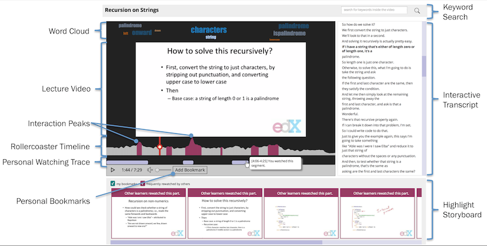
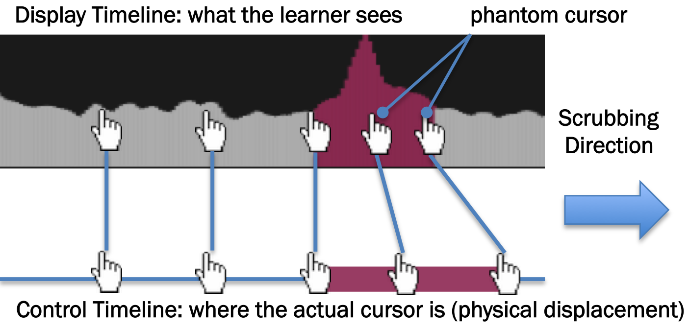
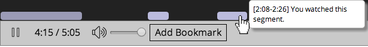
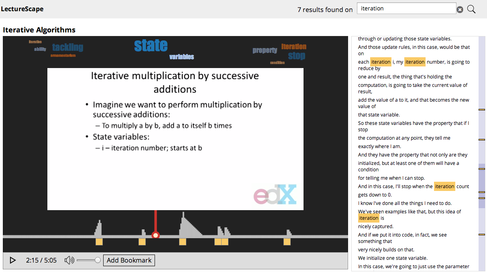
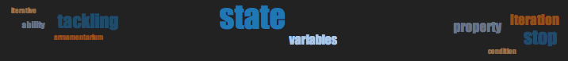
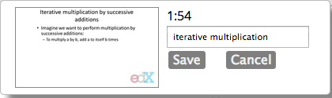
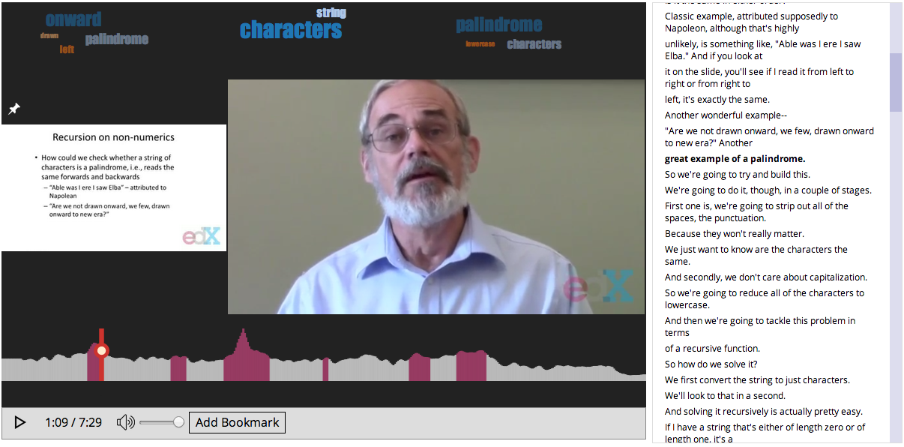

LectureScape
Data-Driven Interaction Techniques for Improving Navigation of Educational Videos
Millions of learners today are watching videos online, using platforms such as Khan Academy, Coursera, edX, and YouTube.
As thousands of learners interact with the same video content, their click behaviors lead to collective interaction patterns.
These patterns might indicate points of confusion, interest, and importance.
Our insight is to leverage this large-scale interaction data to improve the navigation of educational videos.
LectureScape is a video player powered by a set of data-driven video interaction techniques, enhancing the video timeline, text search, and visual summarization.
LectureScape Interface
LectureScape introduces a set of techniques that augment existing video interface widgets, including: a 2D video timeline with an embedded visualiza- tion of collective navigation traces; dynamic and non-linear timeline scrubbing; data-enhanced transcript search and key- word summary; automatic display of relevant still frames next to the video; and a visual summary representing points with high learner activity.
Annotated Screenshot

2D, Rollercoaster Timeline
LectureScape includes the roller coaster timeline, to help learners identify and navigate to important parts of the video.
Rollercoaster Timeline
Unlike a traditional linear timeline, the rollercoaster timeline is 2D with an embedded visualization of second-by-second navigation frequency of all learners and resulting interaction peaks.
Phantom Cursor
It also modifies the timeline dragging behavior by creating a sense of friction while dragging the playhead around peaks.
As a result, frames near the peaks are exposed longer, and are easier to precisely navigate to.
We achieve this effect by temporarily hiding the real cursor, and
replacing it with a phantom cursor that moves slower than the real cursor within peak ranges.

Personal Watching Traces
In addition to collective watching traces, LectureScape also keeps track of personal watching traces
and visualizes in real-time the segments of the video that the current learner has watched.
Clicking on a generated segment replays that segment.

Enhanced in-video search
LectureScape uses interaction data to better support searching for relevant information inside of a video.
Popularity-based Ranking
When the learner types in a search query, the search timeline appears below the video. It visualizes the positions of search results, as well as the relative importance of each. Our search algorithm rewards results in sections of the video where more learners watched.
Hovering on a search result displays the transcript sentence that contains the search term.
Clicking on the result plays the video starting at the beginning of the sentence, to give the learner more context.

Word Cloud
The word cloud at the top of the video displays automatically-extracted topics for the current section.
These topics provide a keyword summary and helps learners recognize and remember the main topics discussed.

Visual Highlights
LectureScape presents a strip of visual highlights below the video to enable a quick overview of important points.
These are the frames frequently watched by other learners.
Clicking on a frame plays that point in the video.
Personal Bookmarks
The learner can also bookmark their own frame of interest and add notes,
which is then added to the highlights stream below the video.

Pinning Relevant Frames
In educational videos, instructors often refer to concepts and formulas introduced earlier in the video,
but the referred slides are no longer be available on screen.
LectureScape automatically pins a relevant frame next to the video for quick reference.
Our pinning algorithm picks a frame that is relevant and includes content watched by many others.
Learners can also manually pin any frame of their interest.

Publications
Juho Kim, Philip J. Guo, Carrie J. Cai, Shang-Wen (Daniel) Li, Krzysztof Z. Gajos, Robert C. Miller
UIST 2014. (to appear)